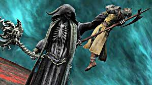
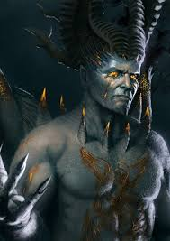
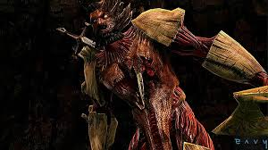
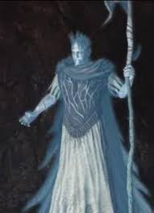
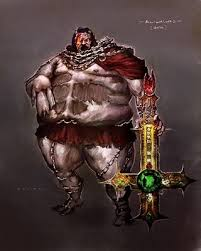

DANTE'S INFERNO: PERSONAJES
DANTE

El protagonista del videojuego. Dante es presentado como un caballero de la Tercera Cruzada quien lleva una banda roja cosida en el pecho que cuenta su vida entera. Este se diferencia del retrato que hizo Dante de sí mismo en la Divina Comedia como alguien débil y tímido, temeroso ante los demonios y espíritus malignos. Este Dante es un guerrero muy poderoso y hábil en el combate y en el uso de magia, además de tener un pasado oscuro. Su armamento consiste en la guadaña que obtuvo de la misma muerte, y la cruz de Beatriz, que recibió cuando él y Beatriz se entregaron su amor en el campo.
BEATRIX
La difunta hermana de Francesco. Ella es el motivo por el cual Dante desciende a las profundidades infernales e intenta evitar que Lucifer la condene al infierno por sus propias culpas (de Dante). Es asesinada antes de la llegada de Dante a Florencia.
MUERTE
Tras ser asesinado Dante, aparece La Muerte en busca de su alma. Dante acepta su destino en un principio pero al escuchar que La Muerte se lo llevará al Infierno y no al Paraíso como el obispo le había prometido a los cruzados, se opone a irse con este y lo combate para salvar su alma. La guadaña de la muerte será el arma principal que Dante usará durante todo el juego y gracias a ella puede avanzar por el Infierno.
LUCIFER
Principal antagonista del juego. El ángel más poderoso del Cielo que se rebeló contra Dios al creer que podría llegar a estar por encima de Él. Tras su derrota, él y el resto de los ángeles rebeldes fueron expulsados al Infierno. Primero se presenta como una sombra oscura, para después aparecer como el enemigo final de juego de una forma gigantesca.
FRANCESCO
En vida un soldado de las cruzadas, hermano de Beatriz y gran amigo de Dante durante las batallas. Beatriz le pidió a Dante que le protegiera, pero Francesco es condenado a la horca por culpa de Dante, su alma es transformada en un espíritu demoníaco que clama venganza contra su amigo.
VIRGILIO
El espíritu de un poeta fallecido en épocas pasadas. Actúa como guía para Dante (de forma similar a su rol en el poema), explicándole los detalles sobre los distintos círculos del Infierno.
ALIGHIERO
Terrateniente del estado de Florencia y de la Toscana, padre de Dante, asesinado por un soldado kurdo, el mismo que asesinó a Beatriz. Condenado al cuarto círculo del infierno: la Avaricia. Dante tendrá que luchar contra su propio padre al finalizar el cuarto círculo del Infierno.